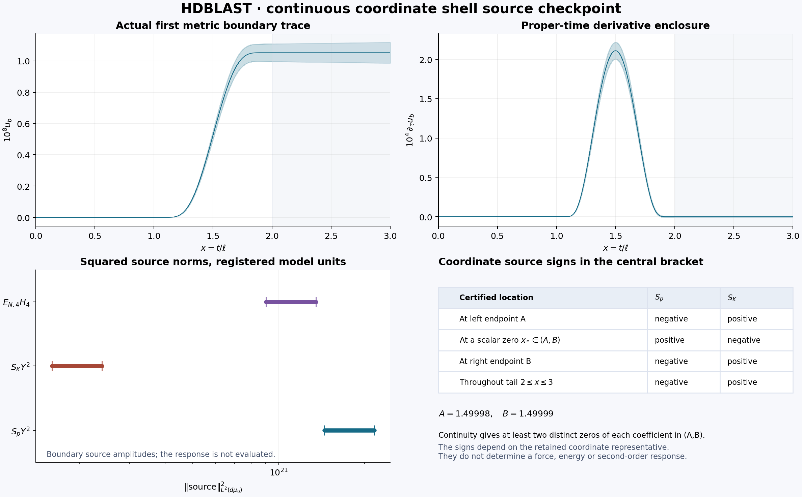
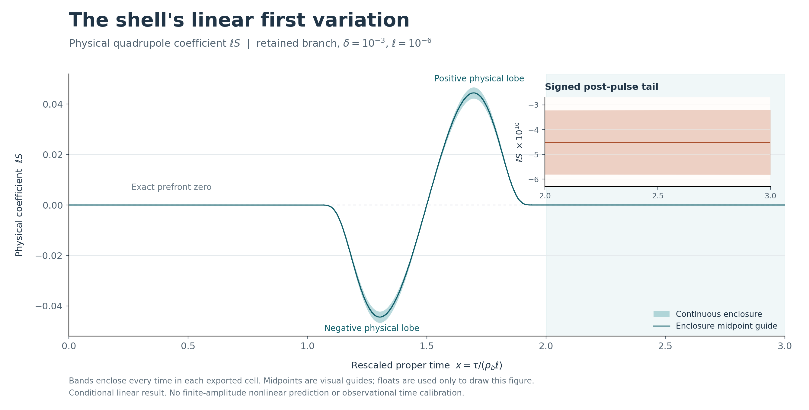
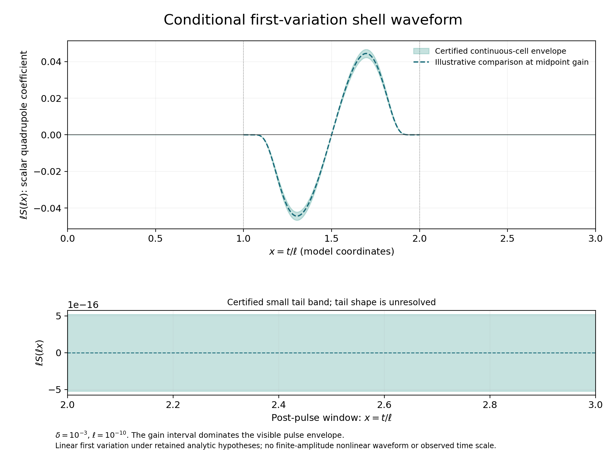

Read this first
Research status
15 October 2026 (Pacific): certified numerical inputs for the selected second-order response. Continuous error bounds now control the actual first master and gauge fields through scaled derivative order three. An exact 23-amplitude homogeneous bulk/boundary operator and a sharp selected-space evaluation constant, sqrt(321/19), support the next numerical calculation.
Whole-cell evaluation of the same second initial profiles tightens the global formal-response norm bound from 1.02 × 1036 to 1.03 × 1033, about 990 times smaller. These are conservative coefficient bounds, not measured field amplitudes. The full quadratic metric-source adapter and a continuously certified numerical second-response waveform remain unfinished. Conditional mathematics does not establish an exact nonlinear family, invariant force or a higher-dimensional Big Bang origin. No new Zenodo version or journal submission accompanies this checkpoint.
Technical working note (PDF) · Derivations, editable source and reproducible calculations · Verification evidence.
16 October 2026: constructive second-order continuation for one aligned quadrupole: A convergent causal integral series defines the full formal second metric–scalar coefficient for the selected registered state on the controlled shell-contact domain. Its operator has contraction factor at most 0.002109 on a 287-dimensional angular tensor-section space, retaining every generated tensor sector.
The construction joins the complete bulk and shell forcing in one common first relative-harmonic gauge, compatible second initial data, physical shell laws and subsidiary gauge constraints. Qualitative smoothness is proved separately from numerical bounds for values and first scaled derivatives.
The coarse comparison-norm cap, ‖U2‖X < 1.02 × 1036, is dominated by the inherited second initial scalar data and carries no physical signal interpretation. No candidate numerical waveform has been evaluated. This conditional coefficient construction does not establish an exact nonlinear family, a finite-amplitude remainder, an invariant force or a higher-dimensional Big Bang origin. Internal AI-assisted review does not replace external specialist review. No new Zenodo version or journal submission accompanies this checkpoint.
Research source and exact reports · Second-response construction · Bulk forcing proof · Physical shell forcing · Result status and literature context · Source ZIP · Replay and publication evidence.
16 October 2026: certified first relative-harmonic gauge wave: For the retained regular background and quadrupole, a convergent construction now gives the first coordinate gauge vector with continuous derivatives through order three. An explicit approximation has uniform error below 5.47 × 10−9 in its radial coordinate amplitude on the controlled causal triangle.
This conditional first-order result preserves the shell’s normal Dirichlet and tangential Neumann conditions. Transforming the quadratic bulk and shell sources and solving the second-order Einstein–scalar evolution remain unfinished. No invariant force or higher-dimensional Big Bang origin is established. Internal AI-assisted review does not replace external specialist review. No new Zenodo version or journal submission accompanies this checkpoint.
Research source and exact reports · Construction and error proof · Derivative bounds · Source ZIP · Replay and publication evidence.
15 October 2026: second initial norms and initial harmonic gauge: Exact rational calculations give coarse certified upper bounds for the values and first spatial covariant derivatives of all four physical second initial fields: the spatial metric, extrinsic curvature, scalar and unit-normal scalar velocity. The initial constraint-source cancellations remain exact. Explicit local initial relative-harmonic lapse and shift velocities include the quadratic terms.
These are conditional initial-data bounds in the stated frames and model units. They do not demonstrate a response, establish a physical force, solve the full second-order spacetime evolution or construct an exact finite-amplitude family. Common boundary/gauge completion and validated coupled evolution remain open. Earlier frozen checkpoints are preserved; internal AI-assisted checks do not replace external peer review.
Research source and exact reports · Second initial norms · Initial harmonic completion · Spacetime initial one-jet.
15 October 2026: explicit compact second initial constraint data: For the registered aligned packet, explicit local formulas now cancel the Hamiltonian and all four momentum constraint sources through second order. The correction remains in the original packet annulus and vanishes near the initial shell. A certified nonzero Hamiltonian source at the packet maximum rules out zero second initial data.
The construction allows nonzero second scalar and unit-normal scalar-velocity data. Physical Cauchy fields and spacetime coordinate velocities are distinguished, with the lapse conversion included. This is a conditional second initial jet, not a finite-amplitude exact initial family or a second-order spacetime evolution. Initial norms, the common gauge and boundary completion, and validated U2 evolution remain unfinished; no physical force or higher-dimensional Big Bang origin is established. Checks and independent internal AI-assisted review do not replace external peer review.
15 October 2026: interior derivatives and bulk forcing bounds: For the registered aligned quadrupole, exact rational estimates now bound every mixed first-master derivative through order three on the controlled causal triangle. A new actual-potential second-derivative bound and the reflected shell terms close this derivative calculation. Reconstruction then gives coarse continuous envelopes for all fifteen longitudinal Einstein quadratic-source components and the complete scalar source over the triangle times S3.
These are conditional bounds in the stated first longitudinal representative and adapted background frames, in model units. They do not compute the second-order response or a physical force. The earlier conditional coefficient construction retains its stated scope; quantitative U2, compatible second initial and common-gauge boundary data, and a validated coupled evolution remain unfinished. Internal AI-assisted review does not establish external peer review, novelty or a higher-dimensional Big Bang origin.
15 October 2026: continuous coordinate shell sources: The certified quadrupole now gives enclosures over 4353 continuous time cells for the actual metric trace at the shell, its proper-time derivative, and the complete one-copy coordinate scalar and isotropic Israel coefficients Sp and SK, with scalar degrees 0, 2 and 4. The metric correction has L2 norm less than 9e-13 of the one-copy material scalar source, yet changes the coordinate source signs at a scalar zero. Each of Sp and SK consequently has at least two distinct zeros inside the certified central bracket.
These results are conditional on the retained analytic inputs and the stated first longitudinal representative and derivative Taylor convention. The reduced Robin forcing norm is evaluated only for degree 4; the degree-2 Robin row is algebraic only. The norms use the background proper shell measure, and coefficient signs depend on the representative. The earlier conditional construction of the complete second coefficient retains its stated scope. No effective nonlinear amplitude or remainder, observational scale or cosmological origin is established. Independent internal checks do not replace external peer review. Full U2 remains quantitatively unresolved.
Derivation and bounds · Source and replay guide.
See the separate publication evidence for replay, CI and live-readback status. Publication evidence.


15 October 2026: quadratic material tension forcing: For the previously certified wider quadrupole (delta = 1/1000, ell = 10^-6 in model coordinates), the explicit material scalar-junction tension contribution is Q_phi = -4 psi_1^2 in the outward-normal SUM convention. It has scalar degrees 0, 2 and 4. Exact continuous enclosures give -2.3 × 10^-19 < ell^2 mean(Q_phi) < -6.7 × 10^-20 throughout 2 ≤ x ≤ 3 and 5.778 × 10^21 < ||Q_phi||_L2(dmu_0)^2 < 8.644 × 10^21 over 0 ≤ x ≤ 3, using the background proper-time measure and model units. The angular mean stays negative throughout the tail; the field vanishes on Y = 0.
This isolates the explicit material tension contribution; the complete quadratic source for bulk-coordinate unknowns and full U2 are not numerically evaluated. The earlier conditional construction of the complete second coefficient is preserved under its stated data and evolution assumptions. No effective finite amplitude, nonlinear remainder, observational scale or cosmological origin is established. Independent internal exact checks are distinct from external peer review and formal PDE verification. Earlier dated entries retain their scope. No new Zenodo version or APS submission was made.
Material tension theorem, normalization and assumptions · Reproducible calculations and independent internal checks.
Publication checks remain pending until documented in the separate final additive evidence receipt. Final additive publication evidence.

Conditional inertial shell waveform: For a newly specified wider aligned quadrupole (delta = 1/1000, ell = 10^-6 in model coordinates, T = 3ell and Z = 8ell), exact interval bounds resolve the shell response at first variation. The normalized trace H(x) = ell D(ell x) satisfies 3.2 × 10^-8 < H < 5.3 × 10^-8 throughout 2 ≤ x ≤ 3. The negative physical gain G makes the corresponding scaled physical first variation ell S negative there. At least one zero lies in each of (1.49998, 1.49999) and (1.96, 1.97); uniqueness is not asserted. The leading proper-time response coefficient satisfies 6.06 × 10^11 < C < 7.44 × 10^11 in R_epsilon = epsilon^2 C + o(epsilon^2), in the stated model normalization.
The actual-background, exact-data, gauge, regularity and whole nonlinear correction-support hypotheses remain explicit. This first-variation result does not close the full second-order nonlinear waveform or provide an effective epsilon or nonlinear remainder bound. No observational scale or higher-dimensional Big Bang origin is established. Internal AI-assisted review and finite checks are distinct from external peer review and formal PDE verification. Earlier entries retain their dated scope. No new Zenodo version or APS submission was made.
Waveform theorem, normalization and assumptions · Reproducible calculations and independent reviews.
Publication checks remain pending until documented in the separate final additive evidence receipt. Final additive publication evidence.


Conditional first-variation shell waveform: For the same specified narrow aligned quadrupole (delta = 1/1000, ell = 10^-10 in model coordinates), a continuous 4098-cell enclosure resolves the physical scalar’s linear first variation. The normalized trace H differs from its explicit comparator by less than 1.0000004 × 10^-7 on 0 ≤ x ≤ 3; the negative physical gain reverses its sign. The leading proper-time response coefficient now satisfies 6.06 × 10^15 < C < 7.44 × 10^15 in R_epsilon = epsilon^2 C + o(epsilon^2).
The retained background, exact-data, gauge, regularity and nonlinear support hypotheses remain explicit. The post-pulse estimate |H| < 4.752 × 10^-14 on 2 ≤ x ≤ 3 is a small-tail bound. No finite-amplitude nonlinear waveform, observed time scale or higher-dimensional Big Bang origin is established. Next: a wider state with a validated background and an effective nonlinear remainder estimate. Internal AI-assisted review and finite checks are distinct from external peer review. Earlier entries retain their original scope. No new Zenodo version or APS submission was made.

Waveform theorem, normalization and assumptions · Reproducible calculations and independent reviews · Continuous-cell enclosure data.
Conditional quantitative shell-response bound: For the retained regular branch at delta = 1/1000 and one newly specified narrow aligned quadrupole (ell = 10^-10 in model coordinates), a free-wave comparison and exact-rational bounds give 10^15 < C < 4 × 10^17 for the leading proper-time response coefficient in R_epsilon = epsilon^2 C + o(epsilon^2). The estimate controls the physical derivative at the shell, with its positive boundary inertia.
This is a coarse conditional analytic enclosure in the stated model normalization. It gives no numerical waveform, effective nonlinear amplitude range, observational scale or evidence for a higher-dimensional Big Bang origin. The background, exact-data, gauge, regularity and full nonlinear support hypotheses remain explicit. Internal AI-assisted reviews and finite arithmetic checks are distinct from external peer review. Earlier entries retain their checkpoint scope. No new Zenodo version or APS submission was made.
Quantitative theorem, normalization and assumptions · Reproducible arithmetic and independent reviews.
Conditional nonzero physical shell response: For one explicitly specified aligned quadrupole with nonzero displacement and velocity, the full coupled Einstein–scalar shell equations now imply a nonzero physical first scalar response. In the retained conditional exact nonlinear family, a squared scalar-response measure over a finite intrinsic proper-time window has a strictly positive leading quadratic coefficient.
The result retains the stated background, exact-data, support, regularity and finite-region hypotheses. It is qualitative: no numerical waveform, response magnitude, effective amplitude threshold or exact nonlinear first-arrival time is supplied. Internal AI-assisted review and finite reproducible checks are distinct; external peer review, global stability and a higher-dimensional origin of the Big Bang are not established. Earlier dated entries retain their original scope. No new Zenodo version or APS submission was made.
Physical response theorem and assumptions · Derivations and reproducible checks.
Exact nonlinear shell evolution at fixed finite regularity: Under the stated background, support and exact-data hypotheses, the selected aligned quadrupole has a small exact Einstein–scalar family on both copies of the controlled positive-cone region for a prescribed finite shell-interaction interval. The construction satisfies the physical shell laws and constraints, with H^14/H^13 evolution and C² parameter dependence in a lower norm.
This is internally reviewed conditional mathematics. The actual first-arrival time and a nonzero gauge-invariant shell response remain to be calculated. No global stability, observational agreement or higher-dimensional origin of the Big Bang is established. The analytic proofs and finite algebra checks are documented separately; no new Zenodo version or APS submission accompanies this checkpoint. Earlier dated entries retain their original scope.
Theorem, proof and assumptions · Reproducible checks and scope.
All-angular linear shell-contact estimate — 14 October 2026 (Pacific): On the registered Einstein–scalar background and a fixed controlled positive-cone collar, the full sixteen-field linear system now has a positive auxiliary Sobolev control estimate independent of angular frequency and of the full tensorial SO(4) cutoff. A bounded change of field variables removes the complete nonsymmetric twelve-row Robin matrix without changing the common wave principal part. Smooth compatible data and forcing give a unique smooth linear solution; the same method controls subsidiary constraint propagation.
Smooth boundary forcing is handled by an explicit lift with its declared regularity cost. No estimate for arbitrary L² Neumann forcing is claimed. The positive norm is analytic control, not physical gravitational energy or a stability result. A separate exact local change of nonlinear boundary variables converts all twelve physical and normal-gauge laws to homogeneous Neumann conditions while preserving the common quasilinear wave principal symbol. This is an algebraic reduction; an exact nonlinear perturbation family through shell contact remains open. The previously established exact initial-data family at fixed high finite Sobolev regularity and the earlier complete second-order coefficient are preserved.
Primary-literature comparisons do not transfer other models' theorems automatically. Internal AI-assisted review is not external peer review; external novelty and a higher-dimensional Big Bang origin remain unestablished. This is a GitHub-only checkpoint, with no new Zenodo version or APS submission. Artifact identifiers use 15 October UTC; this work began 14 October Pacific time. Earlier dated entries retain their original scope.
Estimate, assumptions and reproducible checks · Linear proof · Exact nonlinear boundary reduction.
Complete second-order coefficient through shell contact (14 October 2026): For the specified copy-even commuting quadrupole packet, the unchanged first-order scalar reconstruction cannot satisfy the quadratic degree-four angular equation. The continuation therefore keeps all metric and scalar fields, with their complete quadratic bulk sources and physical shell boundary conditions.
Under the stated background, localization and initial-data hypotheses, a boundary-preserving relative harmonic gauge and a convergent characteristic construction give a smooth complete second Taylor coefficient through first shell contact on a controlled positive-cone collar. It includes scalar degrees zero, two and four and tensor degree two. The construction satisfies all Einstein–scalar equations, induced-field matching and Israel/scalar shell laws through second order, with propagation of the sourced constraints.
This is a conditional coefficient construction. An exact nonlinear family through contact, estimates uniform over all angular modes, nonlinear stability and a higher-dimensional Big Bang origin remain unestablished. Internal AI-assisted proof review is not external peer review, and external novelty is not established. This is a GitHub-only checkpoint, with no new Zenodo version or APS submission. Earlier dated entries, including earlier entries from 14 October, retain their original scope.
Construction, assumptions and reproducible checks · Complete coefficient proof.
Quadratic tensor forcing and a tensor sector through shell contact (14 October 2026): For the specified quadrupole Y = n₁² − n₂² in the fixed longitudinal first-order gauge, the complete gravity-plus-scalar quadratic source has a nonzero transverse traceless angular component wherever either scalar amplitude is nonzero: its coefficient is 16u² + 8v²/3. Thus the two contributions cannot cancel there. A velocity-only packet can have zero source on its initial slice and develop it later.
For even first-order master data, the corresponding forced second-order tensor sector has homogeneous Neumann shell data and a conditional evolution through first contact on a controlled collar. The full coupled scalar and tensor second-order boundary problem and a nonlinear solution through contact remain open.
Derivation, assumptions and reproducible checks. These statements use the specified background, first-order gauge and parity. They establish no Big Bang origin or external novelty; internal proof review is not external peer review. This is a GitHub-only checkpoint, with no new Zenodo version or APS submission. Earlier dated entries retain their original scope.
Exact localized initial data and short precontact evolution (14 October 2026): Under the stated background assumptions and weighted nonlinear estimates, the reflection-invariant quadrupole sector admits a family of exact nonlinear initial data at a chosen high finite Sobolev regularity. A sufficiently short precontact Cauchy evolution keeps the fields equal to the background in a collar of the shell, so its junction conditions remain unchanged there.
The nonlinear boundary problem through shell contact remains open. The theorem concerns high finite regularity; no spatial smoothness to all orders, Big Bang conclusion or external novelty is established. The proof received internal AI-assisted review, which is not external peer review. Proof, assumptions and limits. This is a GitHub-only checkpoint, with no new Zenodo version or APS submission. Earlier dated entries retain their original scope.
Formal continuation by reflection symmetry (14 October 2026): For the restricted commuting quadrupoles of the localized checkpoint, simultaneous diagonalization makes the first-order data invariant under coordinate reflections. These reflections force all ten local symmetry compatibility pairings to vanish at every finite constraint order. Under the stated localization hypotheses, recursive constraint solving and averaging over the reflection group construct localized formal initial data to all orders. This is a formal series: convergence, an exact nonlinear solution and full evolution through shell contact are not established. Derivation, assumptions and limits.
Localized second-order initial data (14 October 2026): On the time-symmetric regular Einstein–scalar slice, the ten symmetry tests are necessary and sufficient for compactly supported second-order initial-data corrections for smooth packets of fixed reflection parity in an annulus away from the shell and cone vertex, under the stated background and localization assumptions. The note gives an explicit correction for A = B = diag(1,−1,0,0). The correction vanishes near the shell, so the initial second-order junction conditions hold with zero shell displacement and tilt.
An areal-radius-weighted monopole identity fixes a spherical metric moment for first-order packets in the reconstruction gauge. Its negative sign for velocity packets is a statement in that gauge: the moment changes under first-order gauge transformations and is not yet a physical mass or energy observable.
Full second-order evolution through shell contact, quadratic interface sources, convergence of the higher-order formal series and nonlinear existence remain open. This result does not establish a higher-dimensional Big Bang origin. Technical note · Calculations and supporting material · Results and limits. This is a GitHub-only checkpoint; Zenodo 23335485 remains the latest archived spectral edition. No new Zenodo version or APS submission accompanies it.
Shell symmetry obstruction (13 October 2026): On the fixed regular Einstein–scalar two-interior shell, the completed nonlinear Noether identity retains both gravitational boundary terms, moving embeddings and the single common shell action. An independent ADM constraint calculation verifies a nonzero second-order obstruction for an explicit compact rotating quadrupole: it cannot be the tangent to a parameter-C² exact classical family satisfying full shell matching. The example can be chosen among smooth non-gauge linear solutions that reach the shell.
Within degree-two data with one fixed radial profile and reflection parity, all ten necessary Lorentz symmetry tests vanish exactly when the displacement and velocity matrices commute, [A,B]=0. Passing these tests does not establish second-order solvability or nonlinear existence. The result establishes no nonlinear growth, stability, Big Bang origin or APS readiness. Normal and optimized portable replay each check 81 positive algebra checks and 21 wrong-formula controls, counted separately.
Technical note · Proofs and portable replay · Results and limits. This is a GitHub-only research checkpoint. Zenodo 23335485 remains the latest archived spectral edition; no new Zenodo edition or APS submission accompanies this continuation.
Conditional evolution through shell contact (13 October 2026): On the fixed regular Einstein–scalar background, an explicit characteristic construction gives a smooth family from compact radial data in a sufficiently thin annulus, with a fixed finite set of angular harmonics of degree at least two. The family includes paired solutions that activate the shell after first arrival on a controlled finite slab. Both reflection parities satisfy the complete induced-field, Israel and scalar junctions without harmonic division, and nonzero states are not pure gauge. An explicit pair with the same reflection parity has a nonzero total physical symplectic pairing, conserved after contact with the odd moving-shell cut term included. The pairing is weakly nondegenerate on this smooth thin-annulus data image.
This conditional linearized result concerns a new collar-supported family. It does not continue the earlier near-cone flux pair to contact or establish a nonzero local shell flux, physical energy, unrestricted angular completion, nonlinear stability, cosmological evidence, external originality or APS readiness. Normal and optimized portable replay each check 84 positive exact identities and 14 wrong-formula controls, counted separately.
Technical note · Proofs and portable replay · Results and limits. This is a GitHub-only checkpoint. Zenodo 23335485 remains the latest archived spectral edition; no new Zenodo edition or APS submission accompanies this continuation.
Earlier local coupled cone evolution (13 October 2026): A regular wave equation now reconstructs smooth solutions of all linearized Einstein–scalar equations across the cone. Compact initial data give two non-gauge solutions with nonzero local symplectic flux. Both reflection parities satisfy the shell junctions before the waves reach the shell. The physical Cauchy symplectic form is nondegenerate on the image of smooth compact master data supported in a sufficiently small spatial ball.
Evolution to shell contact of that original near-cone flux pair remains open; the new collar family above has a separate after-contact proof. The full physical state space and nonlinear stability remain open. This antisymmetric symplectic flux is not a positive energy or reheating calculation, and a higher-dimensional Big Bang origin remains unestablished.
Technical note · Proofs and reproducible code · Results and limits. This is a GitHub research continuation. Zenodo 23335485 remains the preceding archived spectral edition; no new APS submission was made.
Current and physical-domain audit (13 October 2026): The Einstein–scalar action now supplies an explicit symplectic current, including unequal spectral values and the doubled-shell balance. Under stated asymptotic hypotheses for actual solutions, its null-cone limit is a scalar symplectic flux. Exact flat test-field examples show that fixed-time radial closure does not imply zero characteristic flux, and that radial and inertial energy completions can differ. The physical state space of the registered gravitational model remains open.
Technical note · Derivations and code · Results and limits. This continuation is published on GitHub; Zenodo 23335485 remains the preceding archived spectral edition. No new APS submission was made. A higher-dimensional Big Bang origin remains unestablished.
Conditional spectral result (13 October 2026): At every fixed 0 < delta ≤ 0.002, the entire scalar spectrum in both reflection parities is separated strictly from zero in the specified self-adjoint, finite-energy regular-cone realization. The proof gives a positive bound as a function of the background; it does not assign a numerical value or a uniform bound as delta approaches zero. An action calculation, including the moving-shell boundary terms, verifies the local kinetic coefficients of generic even and odd scalar modes. Exceptional harmonics are treated separately. The tensor sector has one even massless radial profile, and every nonzero tensor mass obeys m_T ≥ 3H_b/2.
This concerns the regular branch near phi = +1 of the same fixed action. The original hilltop shell remains a distinct unstable solution; no evolution connecting the two is proved. Global physical-state coverage, admissible diffeomorphisms and cone symplectic flux retain the declared assumptions. No nonlinear stability, reheating mechanism or higher-dimensional Big Bang origin is established. Normal and optimized portable Python replay each pass 103 exact checks and 30 wrong-formula controls, counted separately. Proof, assumptions and portable replay · Claim ledger and gap functional.
Verified publication (13 October 2026): Zenodo 23335485, version 2026.10.13-regular-shell-spectra, contains 35 files / 454,964,066 bytes. It preserves all 33 files from 23294979 and adds the new scientific capsule and overview. Complete public readback verified every filename, size and MD5/SHA256 checksum. Publication proof and complete inventory.
Scalar-boundary result (11 October 2026): an exact response identity and sharper error bounds certify the registered model's regular local branch for every 0 < delta ≤ 0.002, extending the earlier 1.09155 × 10−7 guarantee. The proof gives strict shell-matching monotonicity, RT ≤ −H² < 0, under its stated hypotheses. The uniform scalar and curvature remainder constants satisfy Keta < 3.196 and KH < 0.254. Curvature is below that of the separate complete boundary theory with scalar-independent detuning: H² − Hconstant² < −0.000423 delta² throughout that interval. These conditional mathematical results concern the specified local branch; dynamical stability and a higher-dimensional Big Bang origin remain unestablished. Proof, exact certificates and reproducible calculations · Bounded primary-literature update · Verified Zenodo edition 23294979. The 8 October checkpoint remains preserved.
Verified publication (11 October 2026): Zenodo 23294979, version 2026.10.11-scalar-response-monotonicity, contains 33 files / 454,129,865 bytes in the preserved concept DOI family 17088132. It retains all 31 files from edition 23244754 and adds the scalar-response scientific capsule and overview. Saved metadata and every file's name, size, MD5 and SHA256 were checked before publication and by complete anonymous public readback afterward. Publication proof and complete inventory.
Completed research (8 October 2026 UTC): 98,304 saved-endpoint comparisons. Normal and optimized runs compare every retained node at eta = -4 and -3.5 with exact prescribed flow from its exact saved incoming state at eta = -4.5. Nine scientific files agree byte for byte, independently checked. Maximum Cartesian L1 discrepancy bounds are U < 2.520 × 10−16 and W < 3.158 × 10−15. The 1e-18 gate concerns target-enclosure radii, not saved-state errors. Exact endpoint results and finite-weight bounds.
Separate conditional analytic models: the stable flat five-dimensional half-space response/noise model and its incident-packet extension passed independent analytic review. An exact four-dimensional continuum replica prevents dimensional identification from these observables. In the static linear incident model, smooth compact continuum packets away from threshold with zero bound-mode position and velocity projections produce transient brane storage and eventual reflection, without permanent capture or thermalization. Model assumptions and reviews.
Retained endpoints do not recover the unsaved dense path. Full continuous pressure/contact/time/momentum/UV certification remains UNRESOLVED, metric calibration FAIL, higher-dimensional Big Bang cause NOT_ESTABLISHED and external novelty NOT_ASSESSED. Fresh normal/optimized portable replay and numerical/bulk-model CI passed. Final-document-head CI and live site deployment are recorded separately in the final delivery receipt. The preserved 8 October Zenodo edition is 23244754 (31 files / 453,646,943 bytes). Replay and CI evidence. Current research and publication status.
The original incoming-state error is now ENCLOSED at all 49,152 saved capsule-node occurrences. Exactly decoded binary80 values are compared with a certified target at every node. Eight scientific artifacts reproduce byte for byte in normal and optimized Python, and an independent serialized-output audit verifies every node summary. Exact error transport applies throughout the later time interval to twelve fixed finite-weight sums under identical physical forcing and full contacts. Later numerical trajectory errors, continuous momentum quadrature, contact defects and ultraviolet tails remain outside this result. The full twelve-case certificate remains UNRESOLVED under its unchanged 2 × 10−8 gate; metric calibration remains FAIL. A higher-dimensional origin of the Big Bang remains NOT_ESTABLISHED and external novelty NOT_ASSESSED.
What the public work reports
13 October: cone flux and physical domains
An action-derived current links the scalar equations to physical symplectic flux. Exact comparator examples separate the fixed-time vertex limit from a finite null-cone segment, and radial energy from inertial energy. The full gravitational phase space remains unresolved.
13 October: a positive scalar spectrum on the regular branch
The exact static Jacobi response becomes a nodeless zero-mass reference. A closed ground-state identity and a weighted Hardy inequality give a strictly positive scalar gap for each fixed background, including the continuous spectrum. The tensor partner operator gives the nonzero mass threshold. These conditional analytic statements replace a sampled spectral scan for the stated realizations.
8 October: every saved later endpoint compared
All 98,304 endpoints are enclosed relative to exact prescribed flow from the represented saved incoming state. The 24 finite-weight prefix/endpoint rows give triangle bounds R < 2.352 × 10−14 and P < 2.053 × 10−11; all 24 signed R intervals and all 24 signed P intervals exclude zero. Complete target radii are U < 7.574 × 10−29 and W < 1.263 × 10−28. These scaled first-order finite sums do not certify continuum pressure or contacts. Exact results, measured resources and scope.
7 October: every retained incoming-state node compared
Four authenticated compact archives contain 49,152 capsule-node occurrences; all 76 members are authenticated before the 20 selected arrays are exactly decoded. A prescribed target enclosure is evaluated separately at every node. No stored state is projected or replaced. For U = u/epsilon, the largest Cartesian L1 error upper bound is below 1.571 × 10−16; for W = w/epsilon it is below 1.914 × 10−14 on the coarse grid and 5.776 × 10−16 on the fine grid. L1 means the sum of the absolute real and imaginary discrepancies. The coarse W peaks lie near the top of the momentum band; this is an observed grid difference, not a proof of continuum convergence or its cause.
Exact continuous-time transport bounds density, pressure, work and the pressure time integral for twelve finite-weight prefixes when later forcing and full contacts are identical. The physical source remains active. Density and pressure use a0⁴/epsilon scaled first-order model units. The result does not certify the later stored trajectory or continuous momentum integral. All eight scientific output files agree byte for byte in normal and optimized Python. Independent standard-library arithmetic recomputes the serialized maxima, weighted bounds and normalization drift without importing the numerical producer or evaluating new targets.

A physical test needs restricted model predictions
A bounded update records 22 searches and selected primary passages from eight papers on extra-dimensional cosmology, particle production, memory, quantum states and gravitational-wave propagation. Their distinct actions, signatures and preparation assumptions are kept explicit. A conditional structural argument shows that matching complete effective inputs can produce identical observable probability laws in a dimensional model and a four-dimensional rival. This is not a universal prohibition of extra dimensions. A useful continuation must derive a distinguishing prediction from a specified action, bulk solution, junctions and preparation state before testing specified rivals or observations.
Earlier 7 October checkpoint: prescribed vacuum response enclosed
The calculation fixes the vacuum before either compact source turns on, then encloses two normalized response quantities at the observation time η=−9/2. Its two independently implemented routes cover both sources and all nine rational momentum probes. The largest complete complex enclosure radii are below 1.555 × 10−21 and 3.138 × 10−23. All 36 pairs of rectangles intersect. The zero-momentum probe is the analytic continuation of the response.
A separate continuous certificate includes the prehistory source representation and coefficient error. With identical later forcing and full contacts, the resulting scaled pressure contribution is below 1.625 × 10−18 and density below 4.094 × 10−21 throughout [−9/2, −7/2], for cutoffs 64, 128 and 256. It excludes phase and solver arithmetic across the momentum band, saved-mode error, quadrature and ultraviolet tails. Internal AI-assisted independent review and interval agreement establish no external novelty or hot Big Bang mechanism.
7 October: conditional incoming-state transfer
The direct density and pressure operators give exact homogeneous state transfer on the registered linear background when forcing and full contacts are unchanged. The result retains phase and real normalization drift. The first-order normalization drift can vanish while the incoming-state amplitude remains arbitrarily large.
With normalization drift independently controlled, a separately proved uniform amplitude bound gives conditional finite-band density and pressure error bounds. The direct operators also give continuity-work endpoint differences and an exact signed pressure time primitive. No physical source callback, saved quantum-array decode or trajectory is evaluated. The actual incoming state, coefficient arithmetic, contact errors, quadrature and ultraviolet tail remain uncertified; the result completes no numerical or cosmological certificate.
5 October: finite-band Ward identities and truncation bounds
The new derivation retains the independent density and pressure operators, contact defects, mode-flow residuals and initial-state errors in a composable conservation budget. Exact retarded forcing-error kernels integrate the continuous momentum band analytically. The explicit small bounds apply only to the inherited analytic Taylor tail. They exclude coefficient widths and rounding, propagation and phase arithmetic, incoming-state error, contact evaluation, and time or momentum quadrature. They are not the achieved errors of a numerical ledger run.
Verification reports 41 standard-library checks, 55 symbolic checks plus 12 controls, and 42 independent checks plus 10 controls; normal and optimized replays agree. A smooth incoming-state construction preserves the Wronskian and agrees at all nine registered momentum probes while differing between them. It proves that conservation and probe agreement alone cannot certify the complete incoming state or its momentum integral. These are mathematical checks under declared premises; external mathematical novelty remains unassessed.
3 October: conditional source and operator enclosures
Both analytic sources, all 64 panels and nine exact rational momenta were fixed before execution. Each implementation encloses 1,170 source-moment rows and 130 source-primitive rows, including the complete interval. Source truncation, phase or polynomial-defect errors, coefficient arithmetic and outward serialization enter the intervals. The analytic source and kernel bounds cover real momentum k from 0 to 256; computed enclosure-width checks cover the nine registered probes.
The source-primitive channel is a scalar integral. It does not certify the full stress-energy work/contact ledger. A complete replay from a fresh archive extraction reproduces both scientific output frames exactly. The original metric failures and the earlier ledger diagnosis remain preserved.
2 October: a reproduced ledger diagnostic
Eight of twelve fixed source, grid and momentum cases cross the registered attribution threshold; all consistency controls pass. A continuity integral constructed separately from the measured final density exposes an error in the earlier stored-history integral. The result is classified LEDGER_ERROR_DEMONSTRATED. All three earlier metric-calibration and refinement rounds retain their scientific FAIL results.
The standalone archive includes 237 payload files and its manifest. A full replay from a fresh extraction reproduces every registered scientific value exactly. This is a finite-cutoff diagnostic in a prescribed background, not evidence of cosmological heating.
A precisely specified model
The registered five-dimensional Einstein–scalar shell model has a computer-assisted shell-existence result, conditional on its stated premises. A scalar instability is established within the model; numerical calculations address its uniqueness.
Two numerical fates, neither a hot Universe
The homogeneous classical roll-off heads toward an empty de Sitter brane or reverses and collapses. With no added matter, neither branch produces a radiation-filled hot Big Bang.
Corrections remain visible
The earlier constant-field late-time endpoint fails a boundary condition. A corrected static solution is reported, and an earlier gravitational-radiation claim was withdrawn after an audit.
September 27 checkpoint
The corrected end state is numerically stable in the tested sectors, and small-parameter series were derived through eighth order. Screened heating routes do not produce a radiation era under the registered assumptions. A proposed tension change remains inconclusive because dark radiation exceeds limits so far.
Assumptions and open questions
The incoming-state error is enclosed at every saved finite-grid node, with exact continuous-time transport for fixed retained weights and identical later forcing and contacts. The separate 8 October calculation now encloses the saved later-endpoint discrepancies from exact flow. Neither result recovers the unsaved dense path or certifies errors between saved times, full contact errors, time integration, continuous momentum quadrature or the ultraviolet tail. The previous nine-probe target and continuous source/coefficient representation certificates keep their separate scopes. The research still needs a complete conserved stress tensor with gravitational feedback, a sustained radiation-dominated era, and a distinctive quantitative prediction. The twelve-case action-pressure/contact ledger retains its fixed 2 × 10−8 gate and UNRESOLVED status. The original 29 endpoint and 30 refinement failures remain FAIL. Prior execution-contract failures and repairs remain visible. Earlier MP80/100 final reductions do not convert native trajectories or promoted binary64 quadrature nodes into arbitrary-precision dynamics. Internal AI-assisted audits are not external peer review; external mathematical novelty remains unassessed.
Read the source materials
The repository documentation is the primary source for this overview.
- Cone current and physical-domain research continuation (13 October)
- Regular-shell scalar spectral positivity, tensor thresholds and portable replay (13 October)
- Scalar-response monotonicity, exact local-branch bounds and reproduction (11 October)
- Retained-endpoint results, exact finite-weight bounds and remaining errors (8 October)
- Conditional half-space response/noise and incident-packet models, with independent reviews
- All-node retained-state comparison, exact finite-weight transport and remaining errors
- Bounded primary-literature refresh and model-test implications
- Conditional effective-input identifiability argument
- Registered vacuum response, continuous representation bounds and remaining gaps
- Prospective public protocol fixed before the real source evaluation
- Conditional incoming-state transfer, stress bounds and normalization limits
- Finite-band Ward identities, conditional truncation bounds and incoming-state counterexample
- Conditional source/operator certificate, exact bounds and limits
- Verified source/operator package and reproduction guide
- Fresh source/operator archive reproduction receipt
- Completed active-source results and limits
- Complete fresh archive reproduction receipt
- Standalone package, raw evidence and reconstruction guide
- Current research and publication status
- Program guide and claims ledger
- September 27 plain-language summary
- Checkpoint reading guide
- Dated checkpoints
Archives and citation
Verified publication (8 October 2026 UTC): 23244754, DOI 10.5281/zenodo.23244754, version 2026.10.08-later-state-and-bulk-response, contains 31 files / 453,646,943 bytes in concept 17088132. All 29 previous files are retained; fresh complete size/MD5/SHA256 streams passed before and after publication, with final public readback at 2026-10-08T17:52:21.331322+00:00. The additions are a compact supplement and overview; the full source replay package is pinned separately at immutable commit 52126b98d3e4b24680017fa2537b8449bd75d94f. Publication proof and complete inventory.
Preserved previous edition (7 October 2026):
The verified main-family edition 23228395, DOI 10.5281/zenodo.23228395, contains 29 files / 451,598,148 bytes, preserving all 27 prior attachments from 23225288 and adding a compact scientific supplement and a revised original overview. The scientific supplement contains all registered checkpoint code, exact proofs, compact outputs, independent reviews and original figures. The complete replay package and full node-level checkpoint evidence remain pinned to immutable GitHub commit 13a30ef46f5c90c1b01ae83b609db65fd0f8a709, including the original replay inputs and both large node-level payloads. Every attachment was fully streamed and matched filename, size, MD5 and SHA256 before and after publication. Saved publication witnesses and proof retain the independently verified readback. The concept DOI 10.5281/zenodo.17088132 and all earlier editions remain preserved.
The preserved previous main-family edition 23225288 (DOI 10.5281/zenodo.23225288) contains 27 files totaling 448,387,915 bytes. Every file was fully streamed and matched its size, MD5 and SHA256 before and after publication. It preserves the earlier 23 files and adds the Ward, incoming-state and BD prehistory archives plus an overview. The saved publication proof and offline verifier record the metadata, checksums and preserved earlier editions.
Maldonado, R. HDBLAST: higher-dimensional blast research program. Previous published main-family record 23114217, DOI 10.5281/zenodo.23114217, is independently verified on 7 October 2026, Pacific time, with 23 files / 440,222,994 bytes. Semantic version 2026.10.03-verified-source-operator and its declared 3 October release date identify the frozen source/operator packet. The 5 October finite-band proof and 7 October incoming-state theorem remain later GitHub work outside that archive. Every attachment was streamed and matched size, MD5 and SHA256 before publication; authenticated and direct public readback confirm published state and the reviewed metadata. The publication proof preserves the original literal Notes failure and separately verifies the exact approved paragraph text under the reviewed HTML serialization. Main concept 10.5281/zenodo.17088132, previous main 22347452 and separate companion 23111008/concept 10.5281/zenodo.22922927 are preserved. Automatic archiving stays OFF; no new integration-setting inspection is claimed.
- HDBLAST research website
- Sitio de HDBLAST en español
- All-version DOI: 10.5281/zenodo.17088132
- Dated 5 October draft recovery guide
- Verified upload-files download
- Verified main source/operator archive
- Verified publication proof and Notes serialization
- Retained previous main v24 archive
- Preserved static scalar companion
- Separate static scalar companion DOI family
- Machine-readable citation (CITATION.cff)
14 October 2026: the localized second-order initial-data checkpoint is added above; its evolution through shell contact remains open.
Overview updated on 13 October 2026 with the regular local cone-evolution continuation; the archived spectral checkpoint and earlier scalar-response, retained-endpoint and bulk-model results remain separate. The following registration history concerns the prior incoming-state comparison. The prospective implementation and its full input/review registration were fixed at public commit bedcca7; independent public byte verification preceded real array decoding and target evaluation. Earlier checkpoints retain their declared dates and scope. The result and current status links record later integration and publication evidence. Consult the cited materials for full statements, qualifications and reuse terms. Author: Ricardo Maldonado.